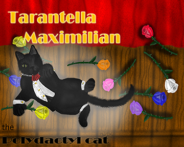

We are not who you think we are


Next on our journey, we come to a dimension where animals live with cultures, feelings, and lives that are similar to ours. They also have to deal with many similar issues: bigotry, cultural differences, diversity, and religious stereotyping. In this story, Princess Puffpuffikins III, a young cardinal princess, experiences going outside the castle by herself for the first time.
Along the way what she meets an elderly purple fox called Amethyst Purplestar. He warns her about other animals that also live there:
- Tarantella Maximillian
- Canidae family
- Toksis family

When she meets them she finds them nothing like what the purple fox said they would be.
 The Toksis family and the Canidae family are close friends, always spending time
together.
The dilemma they faced when one year in September the Toksis families invited the Canidae family to an
Eid
al-Fitr party.
There is one little problem. This happened to fall on the same day as Rosh Hashanah!
The Toksis family and the Canidae family are close friends, always spending time
together.
The dilemma they faced when one year in September the Toksis families invited the Canidae family to an
Eid
al-Fitr party.
There is one little problem. This happened to fall on the same day as Rosh Hashanah!